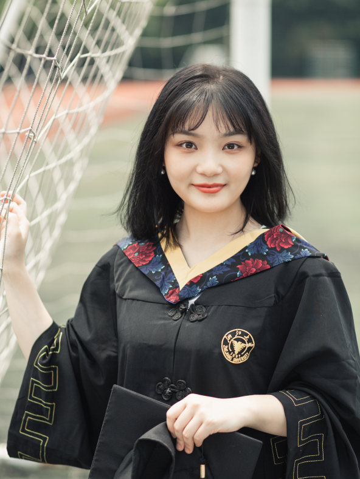

PhD Candidate · Electrical Engineering · Northwestern University
Zhiwei Xu
I study how people perceive visual texture, and build generative models that analyze, synthesize, edit and restore it. My work spans GAN, diffusion and flow-matching models, vision–language models, and perceptual evaluation with human studies.
I'm advised by Prof. Thrasyvoulos Pappas (Northwestern) and Prof. Gaurav Sharma (University of Rochester). I expect to graduate in 2027.
Research interests
Publications
For the full list, see my Google Scholar profile. Equal contribution (co-first authors).
Journal articles
-
Texture representation via analysis and synthesis with generative adversarial networks
e-Prime — Advances in Electrical Engineering, Electronics and Energy, vol. 6, 100286. Elsevier, 2023 · ScienceDirect (texture representation article)
Preprints & under review
-
TRIG: Toward Measuring Texture Realism in Image Generation
Under review at AAAI 2027 · arXiv:2610.15164 (TRIG preprint)
-
Deep-Learned Texture Analysis/Synthesis Finally Beats Traditional Techniques
Under review at IEEE Transactions on Image Processing, 2026 · Project page (texture analysis/synthesis visual results)
-
Diffusion Distillation via Texture-Aware Prior and Spatially Relaxed Matching
Submitted to CVPR 2027
-
Denoising Textures is a Different Ballgame Altogether!
Preprint, 2026 · arXiv:2610.22258 (Denoising Textures preprint)
In preparation
-
Finetuning Vision-Language Models for Perceptual Texture Attribute Editing Trajectories
In preparation for ACM SIGGRAPH 2027 · Project page (texture attribute editing results)
-
Decoupling Artifact Removal and Texture Recovery in Compressed Video
In preparation for Signal Processing: Image Communication, special issue on Extreme Super-Resolution · Project page (compressed video restoration visual results)
Image/Video Processing & Generative Models
-
– present
Flow matching for texture modeling and synthesis
Northwestern University · with Profs. Pappas and Sharma
- Built a texture-specific flow-matching framework from scratch that separates texture style, global phase structure and local stochastic variation, so it can model directional, periodic and stochastic textures with coherent phase.
- Generates textures at arbitrary resolution, and analyzes and synthesizes them from compact 512-dimensional style codes.
-
–
Texture understanding and perceptual attribute manipulation
Northwestern University · with Profs. Pappas and Sharma
- Developed a VLM-guided framework that combines an attribute relation graph with StyleSpace path optimization to edit glossiness, roughness and surface relief selectively, in both directions.
- Distilling a continuous editing flow from the optimized paths. Designed psychophysical and computational evaluations of attribute control and naturalness (editing results).
-
–
Restoration of compressed textures in video
Northwestern University · in collaboration with and supported by Dolby
- Built a perceptual texture-enhancement framework that pairs an artifact-removal backbone with a spatio-temporal refinement network, and works with Shift-Net, BasicVSR++ and STDF.
- Introduced perceptual texture-similarity losses that avoid amplifying artifacts. Improved subband-weighted PSNR, ST-GREED and VMAF over baselines, and confirmed the gains in a human preference study (visual results).
-
–
Generative models for texture analysis and synthesis
Northwestern University · with Profs. Pappas and Sharma
- Developed StyleGAN3-based neural representations for texture analysis and synthesis, latent-space manipulation and perceptual evaluation.
- Designed an adaptive texture loss that combines complementary texture statistics and balances perceptual objectives dynamically.
- In blind pairwise human comparisons, the method was preferred over or tied with the Portilla–Simoncelli baseline 92.4% of the time (visual results).
Robotics (undergraduate)
-
–
Research Assistant, Rehabilitation Robotics & Sensor Integration
Zhejiang University · Hangzhou
- Developed impedance-control strategies for an upper-limb rehabilitation manipulator, with embedded pressure sensing for real-time human–robot interaction and grasp monitoring.
- Implemented sensing and control modules in C++/ROS, integrating camera and sensor data into real-time systems.
-
–
Robotic perception, sensor fusion & adaptive grasping
Zhejiang University · Hangzhou
- Built real-time RGB-D perception pipelines for object extraction and recognition, used to adapt a soft robotic hand's grasping strategy.
- Improved extended Kalman filtering with point-cloud processing for vision–inertial fusion, and controlled a soft pneumatic actuator with a neural-network adaptive controller (project note).
- Integrated tactile sensing for closed-loop grasping (thesis note). Best Innovation Award, National Soft Robots Innovation Design Contest of China.
-
–
Course & competition projects
Zhejiang University · Hangzhou
- Mobile robot navigation in ROS: A* global planning and Dynamic Window Approach local planning.
- SUPCON Cup competition robot: a line-following car with a 3D-printer-style gantry gripper.
Internships
-
–
Research Intern, Generative AI & World Modeling
Futurewei Technologies · New Jersey
- Created TRIG, a texture-aware method for evaluating how closely generated images match real-image texture realism.
- Developed texture-aware supervision for one-step diffusion distillation, reaching FID 1.91 on ImageNet with top-tier agreement with real-image texture statistics.
-
–
Student Intern, Underwater Robotics
The Chinese University of Hong Kong · Shenzhen
- Designed and fabricated a dielectric-elastomer robotic fish bladder and characterized its voltage–volume response for underwater motion control (project note).
Education
-
– 2027 (expected)
PhD, Electrical Engineering
Northwestern University · Evanston, IL · GPA 4.0 / 4.0
Coursework: digital signal processing, computer vision, machine learning, deep learning, deep reinforcement learning, random processes, probabilistic graphical models, information theory, human perception and electronic media, generative models.
-
–
B.S., Automation (Robotics)
Zhejiang University · Hangzhou, China · GPA 3.9 / 4.0
Thesis: Design and Control of a Tactile Nervous System for a Bionic Soft Robotic Hand.
Coursework: principles of automatic control, robotics, flying robotics, software technology, C/C++, Python.
Skills
- Programming
- Python, MATLAB, C/C++ (project: Flappy Cai Xukun), Shell, R (R learning notes)
- Machine learning
- PyTorch, TensorFlow
- Tools
- LaTeX, Git, ROS (project: mobile robot navigation)
- Software
- SolidWorks (project: SUPCON Cup robot), Unreal Engine 5, ABAQUS (project: soft pneumatic actuator), Photoshop, Premiere
Contact
I'm glad to talk about research, collaborations or opportunities. Email me at zhiweixu2050@u.northwestern.edu.